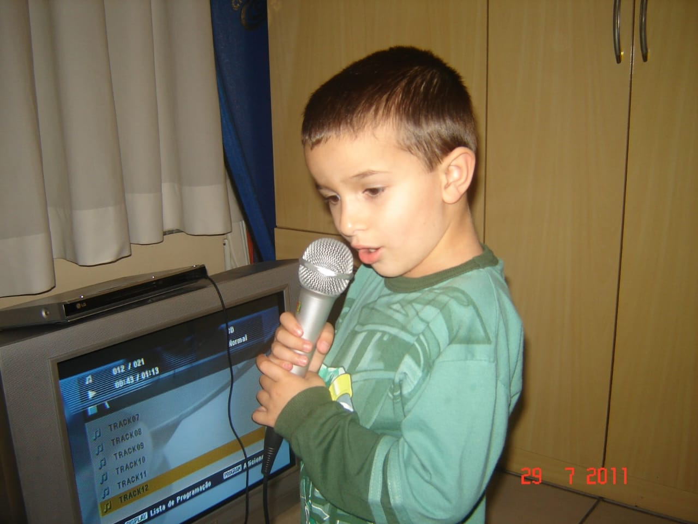

Olá sou o Kauan, tenho 19 anos, estou no primeiro semestre da faculdade de ADS na FMP, gosto de música, toco instrumentos músicais e gosto de jogar futebol e videogame.
Atualmente trabalho com suporte de T.I, pretendo crescer na área e migrar para o desenvolvimento. Nas aulas de PPW (Prática de Programação Web) estou aprendendo HTML e CSS.
Espero que esse primeiro semestre acadêmico seja o primeiro de muitos ótimos semestres cheios de aprendizados e estudos, espero que eu consiga desempenhar um bom trabalho e faça ainda mais amizades com professores e alunos.
Eu quero aprender mais sobre o desenvolvimento e conhecer mais sobre programação, pretendo desenvolver softwares que sejam uteis para as pessoas. Além de querer realizar meu sonho de criança de programar o meu próprio jogo, podendo contar minhas próprias histótrias.

Foto do Little Kauan